Part of: A Series of Unfortunate Assumptions
We often need to compile classical circuits into quantum ones, allowing us to evaluate a function on a superposition of inputs. A core challenge is the fact that quantum unitaries are fundamentally reversible operations, while classical circuits are not. Now, quantum measurement is not reversible, but measurement collapses superpositions, and we have no control over the outcome. So at first glance, it seems it won’t be useful for classical circuit compilation… right?
In this part, I’ll discuss a specific way in which measurement can be used to dramatically speed up quantum circuits.
Seyoon Ragavan and I gave a fun talk on this topic at Eurocrypt 2025. The recording is available here.
Quantum implementation of classical sequential algorithms
Suppose we have a classical algorithm to compute some function \(f(x)\), and we would like to implement a quantum operation that computes this function in superposition. Specifically, we want something that makes the transformation:1 \[ \ket{x}\ket{0} \to \ket{x}\ket{f(x)} \] But now suppose our classical algorithm to compute \(f(x)\) is a sequential algorithm with \(k\) steps \(f_i\): \[ f = f_k \circ f_{k-1} \circ \cdots \circ f_2 \circ f_1 \]
The fundamental question we will explore here is: How can we build an efficient quantum circuit for \(f(x)\), if all of the steps \(f_i\) are themselves irreversible?
One way to do it is to simply store all the intermediate values that are produced.
Let \(x_i\) be the intermediate value output by step \(f_i\), so \(x_i = f_i(\cdots f_1(x) \cdots)\). Also suppose that we can have access to unitaries \(U_i\) which act as \(U_i \ket{x_{i-1}} \ket{0} = \ket{x_{i-1}} \ket{x_{i}}\). We can just start computing intermediate values out-of-place, putting each in a new ancilla register:
\[ \begin{align} &\ket{x} \\ &\ket{x} \ket{x_1} \\ \text{time} \downarrow \;\; &\ket{x} \ket{x_1} \ket{x_2} \\ &\ket{x} \ket{x_1} \ket{x_2} \cdots \ket{x_{k-1}} \\ &\ket{x} \ket{x_1} \ket{x_2} \cdots \ket{x_{k-1}} \ket{f(x)} \\ \end{align} \]
We’ve successfully computed the value \(f(x)\), but there are a ton of extra registers hanging around, that will in general be entangled with the input register \(\ket{x}\) and will cause a problem if we don’t do something about them. Well, starting with \(U_{k-1}\), we can just run the circuit for each step backwards to “uncompute” the intermediate values. “Freeing” each register as we uncompute it:
\[ \begin{align} &\ket{x} \ket{x_1} \ket{x_2} \cdots \ket{x_{k-1}} \ket{f(x)} \\ \text{time} \downarrow \;\; &\ket{x} \ket{x_1} \ket{x_2} \cdots \hphantom{\ket{x_{k-1}}} \ket{f(x)} \\ &\ket{x} \ket{x_1} \hphantom{\ket{x_2} \cdots \ket{x_{k-1}}} \ket{f(x)} \\ &\ket{x} \hphantom{\ket{x_1} \ket{x_2} \cdots \ket{x_{k-1}}} \ket{f(x)} \\ \end{align} \]
Great, we’ve done it! … but at what cost?
Cost of the trivial strategy
If we count each application of a unitary \(U_i\) (or its inverse) as 1 step, then the cost of this strategy is \(2k-1\) steps—which is actually optimal!
But that’s just gate cost. The space cost is \(O(k)\), which is absolutely terrible. To be clear about why this is so bad, suppose each intermediate register is \(n\) qubits long, and we have a relatively fast algorithm with a linear \(O(n)\) number of steps. Then this algorithm will require \(O(n^2)\) qubits to temporarily store all of the intermediate values!
Throughout this post we’ll be building up a table of costs; we’ll start here. Because we’ll be parallelizing later, we’ll record the time cost as “Depth.”
| Algorithm | Space | Depth |
|---|---|---|
| Trivial | \(O(k)\) | \(2k-1\) |
Pebble games
The question of how to do better has been studied for years, even long before the context of quantum circuits. In a 1989 work Bennett studied this question in the context of reversible classical computing. He introduced a beautiful abstraction called a reversible pebble game, which works as follows.
Imagine a game board sort of like that used in mancala or kōnane, in which there are a series of holes or “slots” into which we can place pebbles (in this case, at most one pebble per hole). Assign each intermediate value one of these slots. The abstraction is then:
- placing a pebble corresponds to computing a value (using new space), and
- removing a pebble corresponds to uncomputing a value (freeing up space).
The algorithm’s space usage corresponds to the number of pebbles on the board.
As an example, the trivial out-and-back strategy shown above, where we store all the intermediate values, can be represented by the following pebble game:

To be explicit, here are the rules for a reversible pebble game:
Start: a pebble only on \(x\)
Goal: pebbles on \(x\) and \(f(x)\), no other pebbles present
Allowed moves: can only place or remove a pebble if there is a pebble immediately to its left
Using less space: a recursive strategy
We can use a lot less space than the \(O(k)\) pebbles of the trivial strategy shown above, by using a recursive strategy. First I’ll show it visually:

Here it is written out, if that’s more your speed. Here \(\textsf{Peb}(i, j)\) means “play a length \(j-i\) pebble game from position \(i\) to position \(j\).”
- Place a pebble at \(k/2\) via \(\textsf{Peb}(0, k/2)\)
- Place a pebble at \(k\) via \(\textsf{Peb}(k/2, k)\)
- Remove the pebble at \(k/2\) via \(\textsf{Peb}(0, k/2)\)
Base case: \(\textsf{Peb}(i, i+1)\) is just placing or removing a single pebble
So, what’s the cost of this strategy?
The real win is in space—only a single pebble is left at each level of recursion, so the space usage has been brought down all the way to \(O(\log k)\), which is a dramatic (exponential!) improvement.
For time cost: we are playing three length-\(k/2\) pebble games to solve one length-\(k\) pebble game, so the number of steps is \[ T(k) = 3T(k/2) \Rightarrow O(k^{\log_2 3}) = O(k^{1.58\cdots}) \] which is… fine I guess, but this is a considerable overhead and we’d like to do a lot better! (And we will shortly!)
Note that there is a time-space tradeoff possible here, by dividing the pebble game into more than two segments at each level of recursion. At the end of the day this yields:
| Algorithm | Space | Depth |
|---|---|---|
| Trivial | \(O(k)\) | \(2k-1\) |
| Recursive [Ben89] | \(O(2^{1/\epsilon} \cdot \log k)\) | \(O(k^{1+\epsilon})\) |
Spooky pebble games
So far, we’ve been considering quantum circuits as equivalent to reversible classical circuits. But that mindset gives us all of the difficulties of reversibility, with none of the benefits of quantum! In a really nice blog post from 2019, Craig Gidney laid out how we can change the rules of our pebble game to leverage quantum effects, in particular using measurement as a tool for quantum circuit design. Let’s explore this generalization, which Craig termed spooky pebble games (you’ll see why shortly).
Consider a register \(\ket{x_i}\) that is hanging around because we don’t currently have \(\ket{x_{i-1}}\) to uncompute it. (In pebbling terms, there is a pebble on \(x_i\) but not \(x_{i-1}\)). We can’t measure \(\ket{x_i}\) in the computational basis because that would in general collapse any superposition that we have going. But what if we do a Hadamard gate2 on every qubit in the register \(\ket{x_i}\) and then measure it?
\[ \ket{x} \cdots \ket{x_i} \stackrel{H^{\otimes n}}{\longrightarrow} \ket{x} \cdots \left[ \sum_{d=0}^{2^n - 1} (-1)^{d \cdot x_i} \ket{d} \right] \stackrel{\text{measure } d}{\longrightarrow} (-1)^{d \cdot x_i} \ket{x} \cdots \]
What is the effect of doing this? After the measurement we’ve recovered a register that we can now re-use for something else, effectively removing a pebble! And we haven’t collapsed any superposition over values \(x\) because \(d\) did not encode any information about \(x_i\). However, we have screwed up the superposition by introducing a phase \((-1)^{d \cdot x_i}\). If we want to ultimately get to our target state \(\ket{x}\ket{f(x)}\), we better clean up this phase later—which will in general require access to the value of \(x_i\) (which varies across the superposition of inputs \(x\)).3 Thus Craig termed these phases ghosts: they take up no quantum space but must be cleaned up just like regular pebbles for our pebble game to be considered complete.
Let’s make this explicit in the rules:
Start: a pebble only on \(x\)
Goal: pebbles on \(x\) and \(f(x)\), no other pebbles or ghosts present
Allowed moves:
- can place or remove a pebble on \(x_i\) iff there is a pebble on \(x_{i-1}\)
- can replace a pebble with a ghost at any time
- can exorcise (remove) a ghost on \(x_i\) by placing a pebble there4
What does this buy us? It turns out the answer is, a whole lot!
Recall the recursive construction above. There, we did a pebble game on the first half \(\mathsf{Peb}(0, k/2)\) twice: once to place a pebble at \(k/2\), and again to remove it later. But if we know we are going to be putting pebbles on each position up to \(k/2\) later, we might as well replace the entire first \(\mathsf{Peb}(0, k/2)\) with ghosting! In our paper we call this blasting: you zoom across in a linear number of steps, immediately replacing every pebble you place with a ghost. Visually here’s a depiction of how it changes the recursive construction:

As an algorithm, here’s what’s happening:
- Place a pebble at \(k/2\) via \(\textsf{Blast}(0, k/2)\)
- Place a pebble at \(k\) via \(\textsf{SpookyPeb}(k/2, k)\)
- Remove the pebble at \(k/2\) via \(\textsf{SpookyPeb}(0, k/2)\)
Base case: \(\textsf{SpookyPeb}(i, i+1)\) is just placing or removing a single pebble
What’s the cost of this algorithm? In terms of space, it still only takes \(O(\log k)\) pebbles, just like the (non-generalized) non-spooky recursive construction. But the time cost is now: \[ T(k) = O(k) + 2T(k/2) = O(k \log k) \] We got the time cost all the way down to \(O(k \log k)\)! That’s a dramatic improvement over the non-spooky version.
Updating our comparison table:
| Algorithm | Space | Depth |
|---|---|---|
| Trivial | \(O(k)\) | \(2k-1\) |
| Recursive [Ben89] | \(O(2^{1/\epsilon} \cdot \log k)\) | \(O(k^{1+\epsilon})\) |
| Spooky recursive [Gid19] | \(O(\log k)\) | \(O(k \log k)\) |
Parallelism
The last ingredient we’ll include is parallelism. Parallelism in non-spooky reversible pebble games has been studied before. That already enables a moderate space-depth tradeoff (see table below), but as my coauthors and I found in our recent work, it’s the combination of parallelism and spookiness that is really powerful.
Here’s the absolutely optimal parallel spooky pebble game for \(k=12\), using only 7 pebbles:

There’s a beautiful kind of orchestra going on, where pebbles being placed from the left arrive just in time to always allow a pebble to be removed at the “frontier” on the right.
In our paper we show that parallel spooky pebbling achieves simultaneously the best of both space and depth from the other constructions:
| Algorithm | Space | Depth |
|---|---|---|
| Trivial | \(O(k)\) | \(2k-1\) |
| Recursive [Ben89] | \(O(2^{1/\epsilon} \cdot \log k)\) | \(O(k^{1+\epsilon})\) |
| Spooky recursive [Gid19] | \(O(\log k)\) | \(O(k \log k)\) |
| Parallel [BHL21] | \(O(4^{\sqrt{\log k}})\) | \(O(k)\) |
| Parallel spooky [KRV25] | \(O(\log k)\) | \(2k-1\) |
Summary
Measurement is useful for much more than readout: it is a tool that can break the assumption of reversibility in quantum circuits! We found here that measurement-based uncomputation can reduce not just constant factors, but even the asymptotic complexity of certain quantum operations. Pretty cool!
Some additional tricks, for the interested reader:
- Using measurement-based uncomputation to reduce the cost of quantum addition
- Jaques + Gidney ’20: Superposition masking
Footnotes
I’ve written the transformation in terms of basis states; it extends to superpositions by linearity.↩︎
Typically a layer of Hadamards is the simplest and cheapest basis change to use for this trick. However the trick works for a large class of unitary transformations—essentially anything that maps product states to uniform superpositions, with the information becoming encoded in the phase. For example, one can instead do \(\mathsf{QFT}_{2^n}\) on an \(n\)-qubit register and then measure; this makes cleaning up the resulting phase easier in some situations.↩︎
The phase also depends on \(d\), but after the measurement this value is classically known; we can just keep track of it classically until it’s time to fix the phase.↩︎
While the terms “spooky pebbling” and “ghost” were introduced by Craig in his blog post, calling the removal of ghosts “exorcism” is my fault. Hey, I’m doing my part in making the scientific literature a little more fun!↩︎